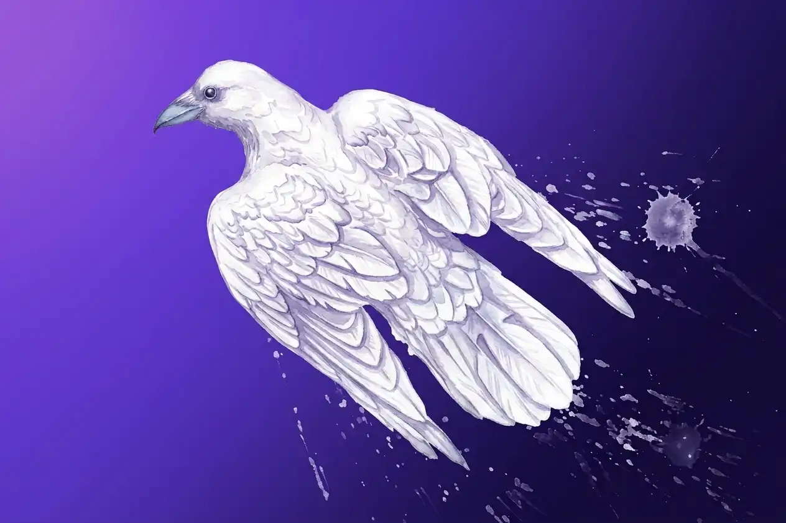

Note : 9,4 sur 10
Crow Master
Un voyage aérien élégant, porté par un vol fluide et un monde ouvert rempli de secrets.
Avis et aperçus de jeux vidéo, avec leurs points forts, leurs points à surveiller et un verdict clair.

Note : 9,4 sur 10
Un voyage aérien élégant, porté par un vol fluide et un monde ouvert rempli de secrets.

Potentiel estimé avant sortie : 8,2 sur 10
Aperçu, jeu non testé
Navigation orbitale, exploration d’un artefact et combats tactiques : un ambitieux Tactical-RPG spatial.